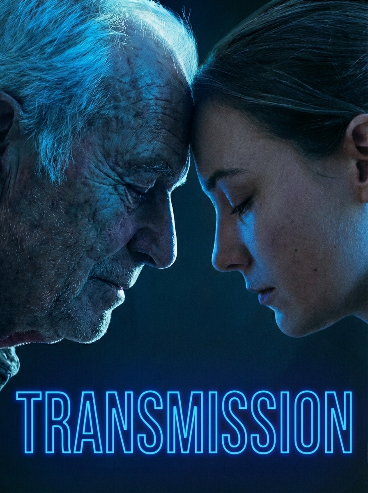
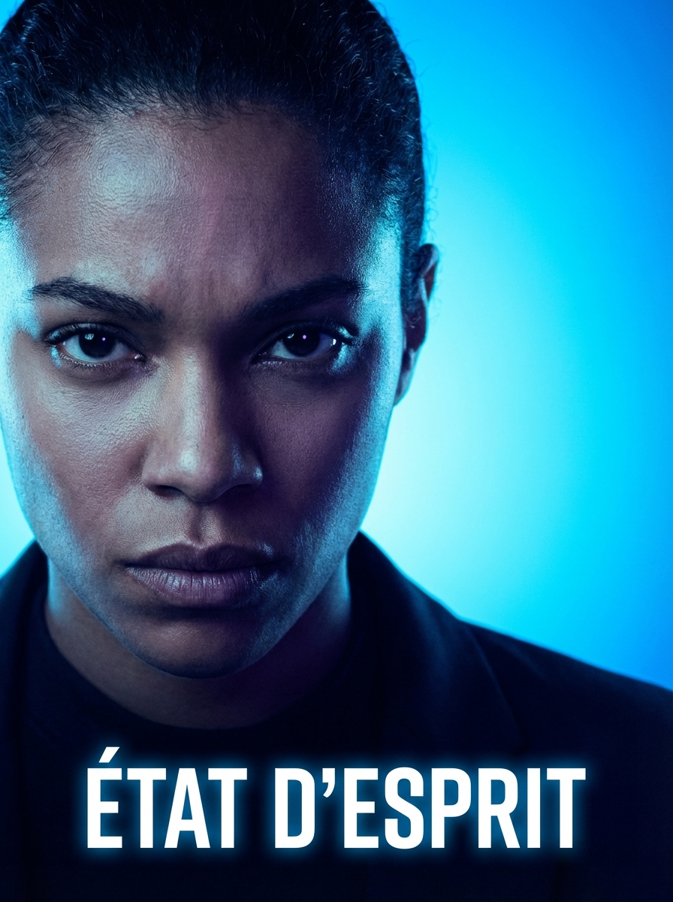
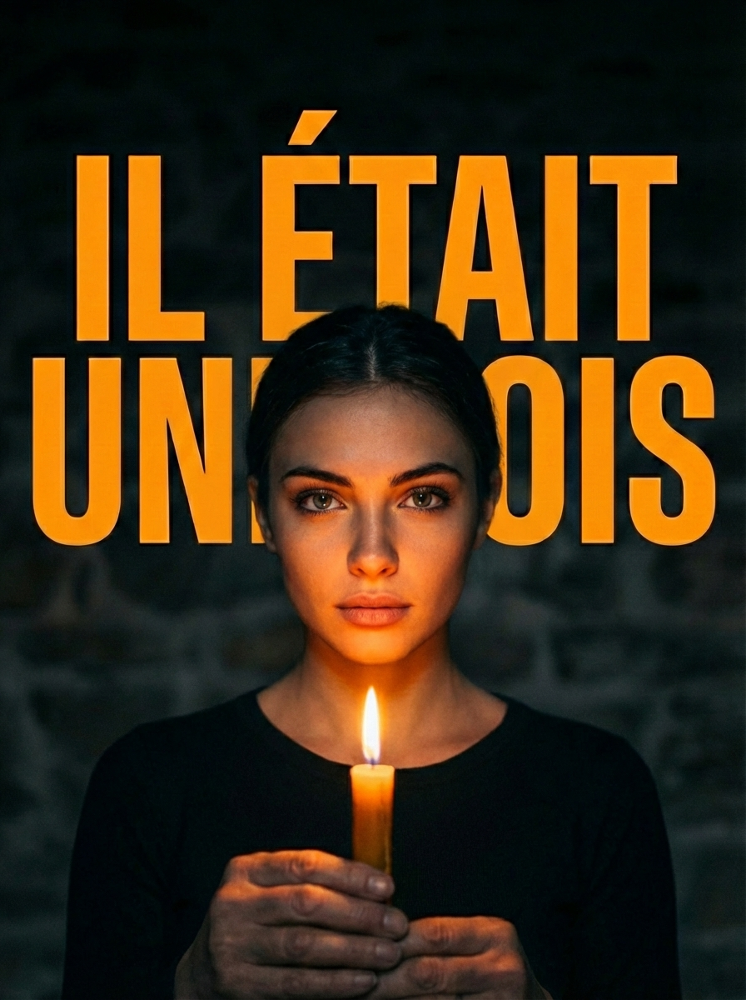
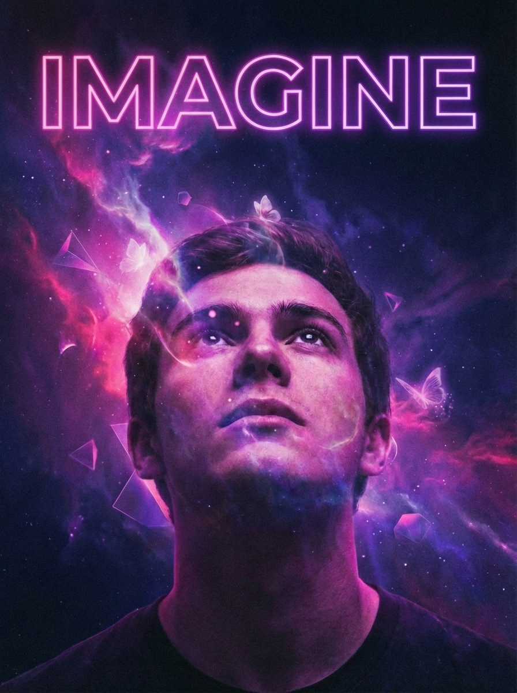
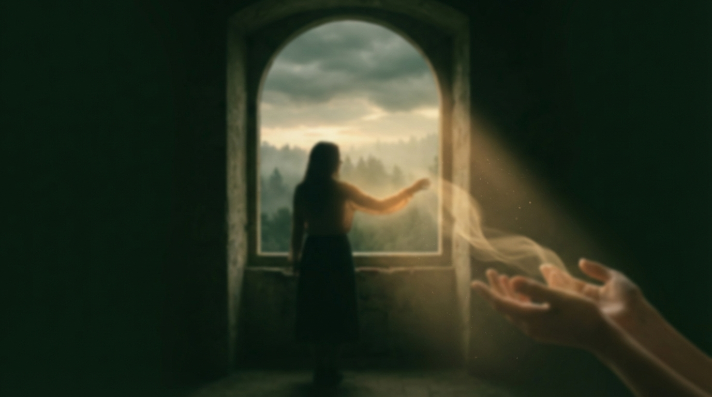
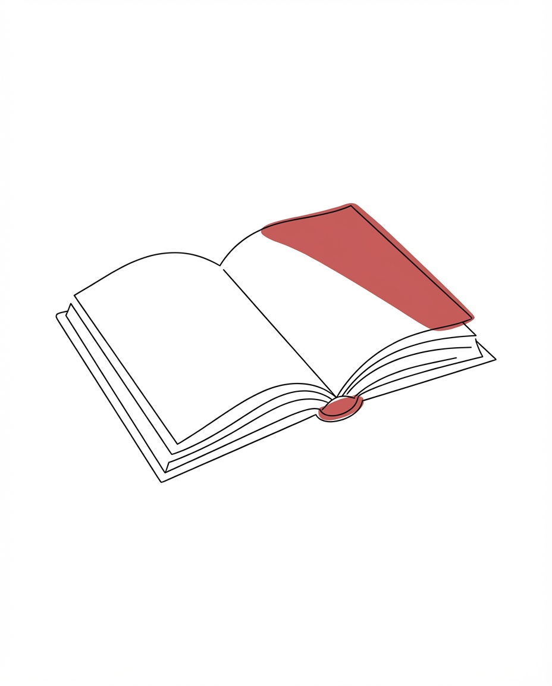
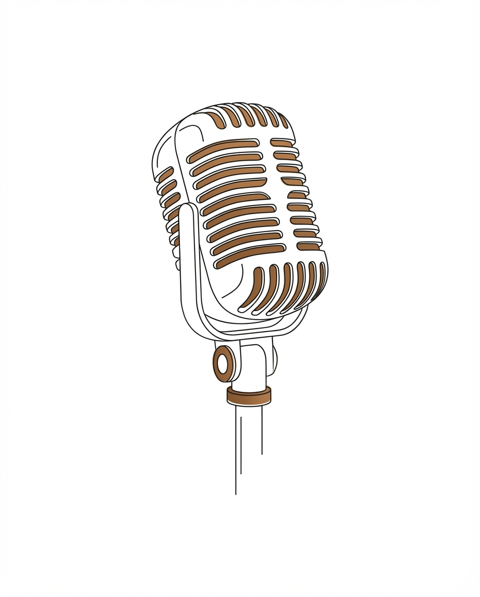
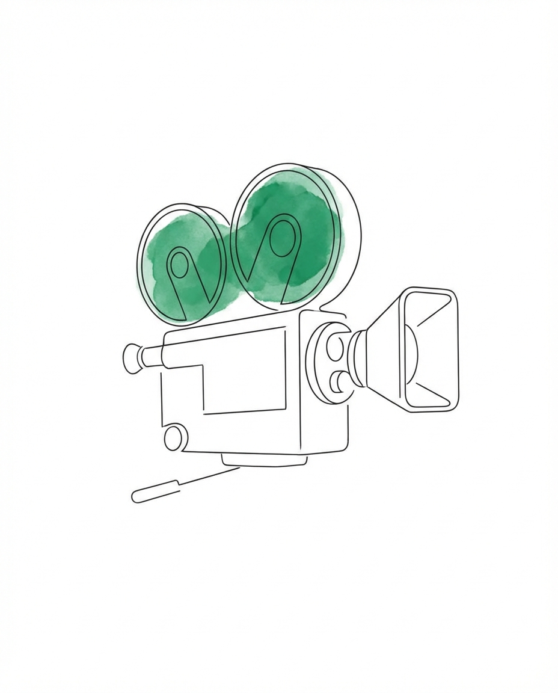
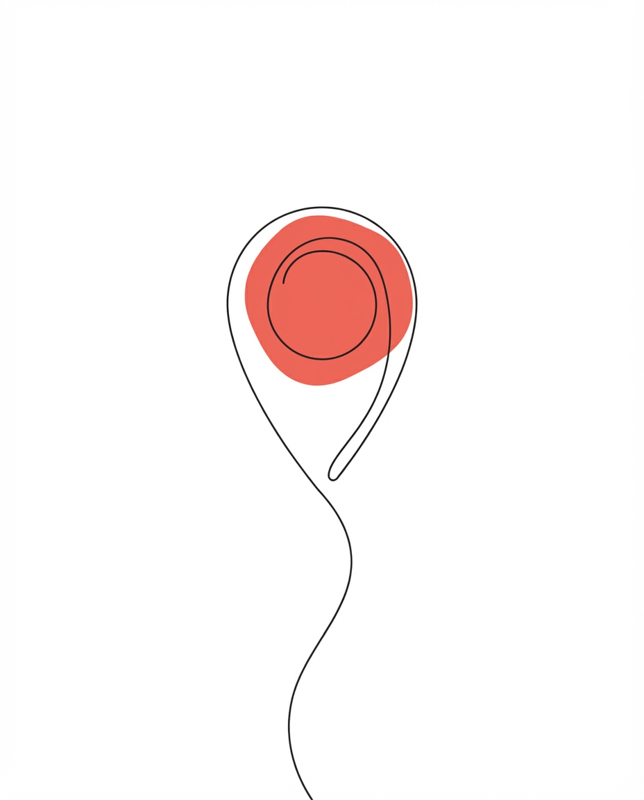

Derrière ce qu'on appelle un manque de motivation se cache autre chose : un cerveau qui tourne trop vite, et une honte qu'on ne sait pas nommer.
Trois formats, trois temps. À lire dans le métro, à regarder pendant le café, à écouter avant de dormir — vous avez le choix.
Ce n'est pas de la paresse. Ce qu'on appelle procrastination cache souvent une forme précise d'évitement émotionnel.
Un format vertical pour comprendre pourquoi la moitié des Français n'arrive plus à dormir — et ce que la science commence à savoir.
Mathilde, 34 ans, raconte ces mots qu'elle porte depuis dix ans pour sa mère. Et ce qui s'est passé quand elle a fini par les dire.
Six collections pensées comme des voyages en plusieurs épisodes. Un thème exploré en profondeur, à son rythme, jusqu'au dernier chapitre.

Ce qu'on hérite sans le savoir. Douze histoires où l'on voit un morceau de parent refaire surface — parfois trop tard, parfois juste à temps.
Ép. 09 en cours« Ma grand-mère parlait peu. Et puis un jour, à 89 ans, elle m'a dit cette phrase. »

NouveauLa force du mental au quotidien.

12 400 écoutesDes destins extraordinaires.
Dans les coulisses des métiers.
Des mots qui changent tout.

Sortie en maiEt si tout était possible ?
Studio Origines · Reportage
Témoignage · Interview
Six thématiques, des centaines de récits écrits par des lecteurs. Des voix qui se ressemblent, qui se cherchent, qui se reconnaissent.
Lire l'histoire complèteJ'ai écrit cette lettre à 22 ans. Je ne l'ai postée qu'à 34. Et ma mère ne l'a jamais lue.
Ce qu'on ressent quand on n'a pas encore les mots.
94 histoiresGrandir à côté de soi, avec le temps.
78 histoiresCe qu'on a traversé, et ce qui nous reste.
67 histoiresCeux qu'on aime, ceux qu'on a perdus, ceux qu'on cherche.
109 histoiresDire ce qui ne va pas, pour commencer à aller mieux.
41 histoires
Quand quelque chose bascule, et ce qu'on en fait.
23 histoiresDes livres, des podcasts, des lieux, des films — sélectionnés un par un par la rédac. Aucun deal, aucune pub : juste ce qui nous a touché.

Un recueil de 82 lettres jamais envoyées, exhumées en 2023 dans un grenier parisien. On lit ça comme on regarderait une photo en noir et blanc qui aurait quelque chose à nous dire — et qui en a effectivement beaucoup.
Lire notre critique
PodcastXavier de La Porte reçoit une linguiste. On en ressort un peu moins sûr de nous, et c'est peut-être ce qu'il fallait.

FilmUn nettoyeur de toilettes de Tokyo. Deux heures de presque rien. Un des films les plus doux qu'on ait vus cette année.

DestinationQuarante heures de train depuis Oslo. Des cabanes rouges, une lumière qui ne ressemble à rien. On repart changé.